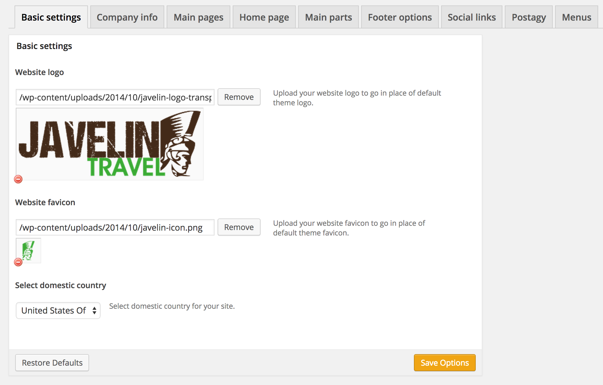

1. Overview
TRAVPACE
is a beautiful wordpress theme for selling online accomodations based on Foundation.
We redesigned many of it's components to look flat & scalable in every pixel so that it can accomodates you on your inherited projects.
Accordingly, you shall create a child theme that uses our Travpace theme as its parent theme, and do your customisations based on the provided PSD 1
2. Dependencies
We did not modify any line of Foundation (Except for RTL & its main color) which is already happening automatically from Theme Options so you will be safe using Travpace in your ongoing project as long as you understand the CSS structure:
1. Foundation Framework Stylesheet
Two Mutually-Exclusive Files
css/foundation.css which will be rendred automatically if you're on a LTR project, the second file accordingly is css/foundation-rtl.css which is for RTL projects.Note You aren't allowed to modify either
css/foundation-rtl.css or css/foundation.css
2. MD Foundation-Redesigned-Components Stylesheet
Two Complementary-Non-Exclusive Files
We created
css/md-travel.css which is mandatory for the theme to work wether it's LTR or RTL, The second file is css/md-travel-rtl.css which is for RTL-only projects.Note You aren't allowed to modify either
css/md-travel.css or css/md-travel-rtl.css
3. Getting Started
Since it is built on top of Foundation as a theme you can use it on your project with Foundation 5 according to its documentation.
Using our parent theme is as easy as adding CSS rules to your child-theme-folder/style.css in your project folder and adding new assets, or overriding the current assets (Refrence to 2. Dependencies)
Client-Branded Custom Stylesheet
Editing yourchild-theme-folder/style.css of the child theme to have all your CSS magic rules, The easiest way to start the skin process is by applying the client brand color, complementary color(s), Typography, css rules to override the default components style.Here is an example of how the file would look like demo and keep in mind the theme will crash if you took away the top comment.
/*
Theme Name: Your Website Name
Theme URI: http://travpace.com/
Author: MitchDesigns Team
Author URI: http://mitchdesigns.com/
Version: 2.0
Template: travpace
*/
.your_rebranding{property:values;}
4. Theme Options
Once login to Wordpress Dashboard go to Appearance > Theme Options to see the following structure:

Theme Options/ ├── Basic Settings │ ├── Logo │ ├── Favicon │ └── Color Scheme ├── Company Info │ ├── Company Name │ ├── Website Name │ ├── Contact Phone Number │ ├── Contact Email Address │ ├── HQ Latitude │ └── HQ Longitude ├── Main Pages ├── Homepage │ ├── Show/Hide Top offers (Plus Title, Subtitle and sorting order) │ ├── Show/Hide Staff Picks (Plus Title, Subtitle and sorting order) │ └── Show/Hide Top Destinations (Plus Title, Subtitle and sorting order) ├── Main Parts │ ├── Choosing Header File │ ├── Choosing Footer File │ ├── Choosing Pre-footer file │ └── Choosing Homepage Splash File ├── Footer Options │ ├── Copyrights Text │ ├── Enable ETAA logo │ ├── Enable IATA logo │ ├── Enable Master Card logo │ ├── Enable VISA logo │ ├── Enable Trip Advisor logo │ └── Enable Trip Norton logo ├── Social Links │ ├── Facebook Page URL │ ├── Twitter Profile URL │ └── LinkedIn Profile URL ├── Posttagy Settings │ ├── Form Action URL │ └── Email Address Input field name └── Menus ├── Main Navigation ├── Supporting Menu ├── Footer Menu 1 ├── Footer Menu 2 ├── Footer Menu 3 ├── Footer Menu 4 └── Coyrights Menu
Let's go from top to the bottom of this list.
Basic Settings — as you can guess this is a folder where all original
Bootstrap files are (untouched). Before using our theme please make sure you didn't modify
anything that can break compatibility: paddings, margins, etc.
Note: you can modify variables.less safely.
Company Info — compiled Flat UI CSS. If you like everything and don't want to change the look of our components it is better to use CSS version. This is an easiest way to start using Flat UI.
Main Pages — yes, this is an icon font. When integrating make sure you
copied all font files correctly. You might want to change/add glyphs. If so, open
IcoMoon and import icomoon-session.json
there to make all glyhps editable.
Homepage — unfortunately we should use them in few cases. The rest is in the glyphs.
Main Parts — we tried hard to make our components all look true Flat. To do
so we used JS plugins. Most of them are well known, some of them not. The most JS-ified part
is form components: checkboxes, radios, switches, selects since it is not currently possible
to style them identically in all browsers. Open application.js for integration
examples.
Footer Options — where all our stylesheets are (not preprocessed).
Social Links — where all our stylesheets are (not preprocessed).
Posttagy Settings — where all our stylesheets are (not preprocessed).
Menus — where all our stylesheets are (not preprocessed).
5. File Structure
theme-folder/ ├── style.css ├── css/ │ └── You can add any new CSS files here ├── js/ │ └── You can add any new JS files here ├── font/ │ └── You can add any new fonts files here ├── img/ │ └── You can add any new Images/Assets files here ├── languages/ │ └── en_US.mo │ └── en_US.pot └── includes/ ├── config.less ├── flat-ui.less ├── icon-font.less ├── mixins.less ├── spaces.less └── modules/
Let's go from top to the bottom of this list.
bootstrap/ — as you can guess this is a folder where all original
Bootstrap files are (untouched). Before using our theme please make sure you didn't modify
anything that can break compatibility: paddings, margins, etc.
Note: you can modify variables.less safely.
css/ — compiled Flat UI CSS. If you like everything and don't want to change the look of our components it is better to use CSS version. This is an easiest way to start using Flat UI.
fonts/ — yes, this is an icon font. When integrating make sure you
copied all font files correctly. You might want to change/add glyphs. If so, open
IcoMoon and import icomoon-session.json
there to make all glyhps editable.
images/ — unfortunately we should use them in few cases. The rest is in the glyphs.
js/ — we tried hard to make our components all look true Flat. To do
so we used JS plugins. Most of them are well known, some of them not. The most JS-ified part
is form components: checkboxes, radios, switches, selects since it is not currently possible
to style them identically in all browsers. Open application.js for integration
examples.
less/ — where all our stylesheets are (not preprocessed).
-
config.lessis where all variables are. -
flat-ui.lesslinks everything into one single bundle. -
icon-font.lessmakes all icon glyphs work. Converted by IcoMoon. -
mixins.lesshelps automating things. Feel free to add yours here. -
modules/is where all components are. If you want to add yours create module-name.less here. Name it as a class name if possible.
5. Theme Components
-
Offer listing widget
Filenameincludes/parts/accommodation-item.php
Found inincludes/parts/homepage-top-destinations.phppage-accommodation-list.phppage-collections.phppage-home.phpsingle-accommodation.phpsingle-tour.phpsingle-location.php -
Breadcrumb Steps
Filenameincludes/parts/breadcrumb-steps.php
Found inpage-booking.phpsingle-accommodation.php -
Fixed Horizontal Navigation in Tours Single Page
Finemameincludes/parts/fixed-nav-menu-tours.php
Found insingle-tour.php -
iconbar.lessIcon bar (another navigation type). -
select.lessCustom selects. -
switch.lessCustom switch. -
tagsinput.lessTags input field. -
ui-datepicker.lessDatepicker widget. -
ui-slider.lessRange slider. -
ui-spinner.lessText input with increment/decrement.
6. Restyled Components
alerts.lessbreadcrumbs.lessbuttons.lesscaret.lessdropdown.lessinput.lesslabel-badges.lessnav.lessnavbar.lesspager.lesspagination.lesspopover.lessprogress.lesstables.lesstooltip.lesstype.less